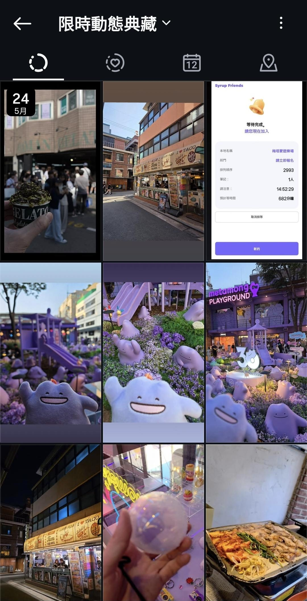
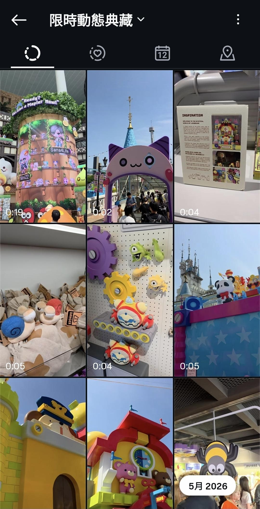
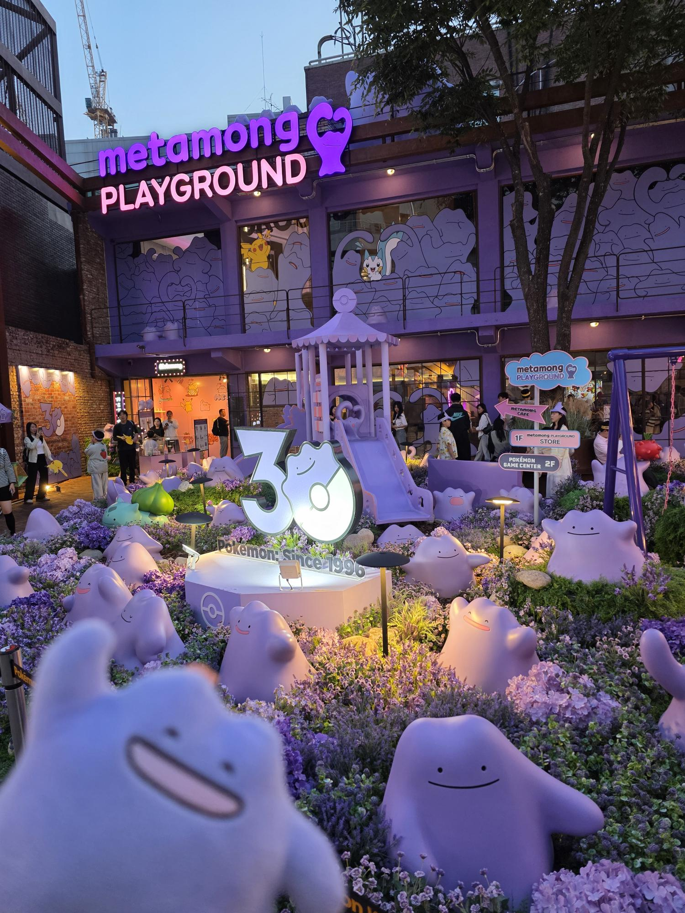

聽見熟悉 BGM 的那一刻，我知道有些喜歡從未消失
在辦公室忙完一個昏天暗地的專案週期，看著桌上的公仔，想著下一次要逃去哪裡大睡特睡。不過就在五月，當我滑到韓國竟然同時舉辦了「楓之谷」與「百變怪」限定活動的消息時，原本被工作消磨殆盡的熱血瞬間復活了。
楓之谷幾乎陪我度過整個學生時代。從國小、國中到高中，跟同學組隊刷副本、瘋狂討論技能點法、熬夜攻略 boss。那些青春歲月裡最快樂的片段，幾乎都有它的身影。百變怪也是，小時候第一次在遊戲裡抓到牠，那種「這傢伙到底是什麼生物」的困惑與喜愛，到現在都沒消散。想到這兩個兒時記憶同時在首爾等我，生活中那些煩人的事突然沒那麼令人崩潰了。
同事說我出發前一週精神特別好，我想，那大槪是「有事可以期待」的力量吧！這可不是單純的出國度假，而是一場跨越兩千公里的「情懷補完計畫」！一拿到主管簽核的假單，我便帶著無比期待的心情飛往首爾。
樂天世界：楓之谷帶我回到小時候
抵達首爾的第一站是樂天世界的楓之谷聯名活動。雖然兩個活動一個在蠶室、一個在聖水洞，地理上有段距離，但完全阻擋不了骨灰級玩家的決心。踏進樂天世界場地的瞬間，音響裡飄出那個熟悉到骨子裡的 BGM，整個人瞬間狀態不對，眼睛有一點點紅。
場地裡重現了遊戲裡的標誌性場景，從楓葉村到各個地圖的經典元素，全都立體化擺在眼前。站在那裡，那些年的畫面一幕幕閃過：媽媽喊吃飯我假裝沒聽到、考試前一天還在練等級、跟同學傳紙條討論技能點要怎麼配。這趟旅行最值得懷念的，大概就是這個當下。不需要什麼網美濾鏡，也不需要 Instagram 的構圖，只是突然回到小時候的感動吧！站在異鄉的活動場地裡，被自己的童年輕輕打了一拳，打得心甘情願。
 |
聖水洞初印象：文青街區藏著驚喜
隔天我們移師聖水洞。踏進這裡的第一感覺是，老舊工廠改建的複合式空間、塗鴉牆、獨立選物店，街道有種迷人的新舊混搭感。漫步在午後的街道上，陽光灑在充滿異國風味的漢堡與塔可店招牌上，隨手一拍都是時尚大片。但最讓我震驚的，是隨便走進一條巷子都可能撞見排隊人龍。
說到排隊，就不得不提「百變怪遊樂場（Metamon Playground）」。這個以百變怪為主題的寶可夢快閃展場，外觀是夢幻的薰衣草紫，門口花圃種滿了紫色小花，幾十隻大大小小的百變怪雕像錯落其中，還立著發光的 30 週年紀念裝置。傍晚的燈光打上來「天啊！這也太可愛了！」。
紫色花海中，一群百變怪雕像圍繞著「Pokémon Since 1996」的 30 週年裝置，夜燈亮起的瞬間，像走進一場不願醒來的童話。
不過，進場之前要先過排隊這關。我掏出手機看叫號系統，系統顯示等候人數：2993 人，預計等待時間：682 分鐘。我看了一眼，再看一眼，確認自己沒有看錯。682 分鐘，大約是 11 個小時。
候位系統顯示「等候序號 2993、預計等待 682 分鐘」，某種意義上，這也是一張體現自由行執著靈魂的無價紀念照。
 |
朋友在旁邊語氣平靜地說：「我們先去吃飯好了。」於是我們把「等候」這件事，變成了另一種旅遊節目。趁著空檔在附近街道亂晃，吃了一杯開心果口味的冰淇淋，比想像中還要好吃！接著鑽進幾間小店看文創商品，把聖水洞的巷弄幾乎走透透了。
百變怪遊樂場：等了五小時，值得
等了將近五個小時（沒錯，我們上班族就是這麼執著），終於輪到我們入場。裡頭比外頭更精彩！每個角落都是百變怪，牆上、天花板、展示架，連廁所指示牌都是牠的臉。小時候最喜歡百變怪，因為牠雖然沒有固定形狀，卻能變成任何模樣去適應世界；長大後在職場闖蕩，發現我們也默默變成了百變怪，在不同的專案之間切換形狀。但在這裡，我不需要當個成熟的大人。我在裡面買了限定款百變怪玩偶，結帳時對帳單讓我沉默了一秒，然後告訴自己：「免稅免費免稅免費......免費免費免費免費」。
 |
夜色中的 Metamon Playground 招牌亮著霓虹燈，紫色建築配上滿園的百變怪與花卉，整條街都染上了夢幻的紫色濾鏡。
在充滿情懷的洗禮後，晚上我們在聖水附近隨意找了一間道地的韓式烤肉店，當厚實的豬五花在鐵盤上發出滋滋聲響，伴隨著金黃酥脆的泡菜與香氣四溢的韭菜，幾口熱騰騰的烤肉下肚，幾天下來的鐵腿感瞬間煙消雲散。
回程：充飽電，再上戰場
坐上飛機準備返台，翻著手機裡的照片，樂天世界的楓葉、聖水洞的紫色花海、百變怪的笑臉，有一種說不清楚的滿足感。不是因為去了頂級餐廳或住了豪華飯店，而是真的做了一件「只為自己」的事，而且還是跨越兩個地點、追了兩段童年的那種。
平常工作忙起來，很容易忘記自己喜歡什麼。這趟旅行提醒了我：
喜歡的東西不會因為長大就消失，它只是在等一個你願意回頭的機會。
回到辦公室第一天，同事問我韓國怎麼樣。我說：「很好，童年追回來了，還追了兩個。」他一臉問號，我笑了笑，打開電腦，開始處理積了五天的信件，但心情出奇地好。
旅行的意義，大概就是這樣：
不一定要走遍名勝，只要找回那個讓眼睛發光的自己，就夠了。